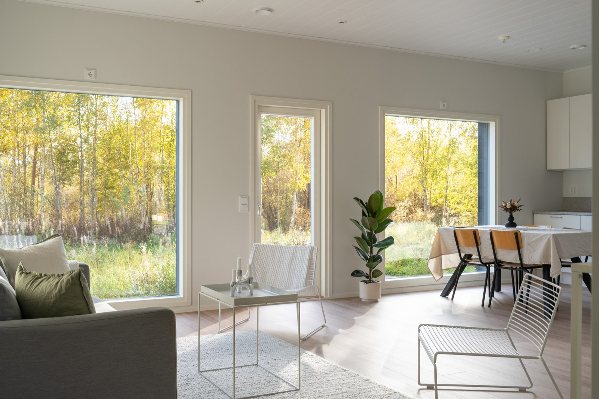
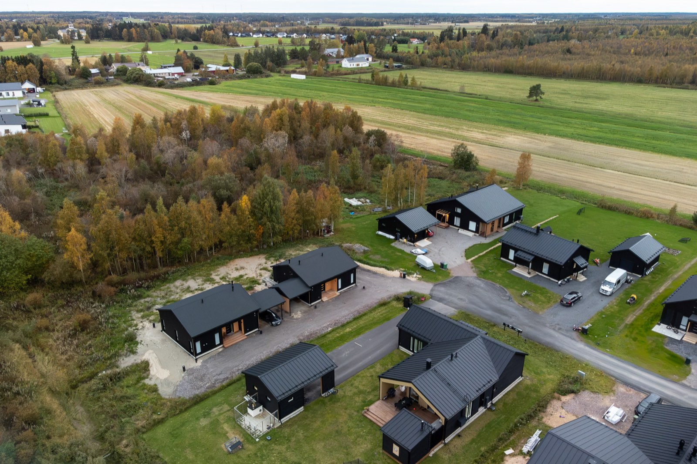

Sudenkorento 6 A ja B
Kaksi kotia, joissa jokainen neliö on mietitty arkea varten. Valttikotien ensimmäiset valmistuneet kodit ovat jo löytäneet omistajansa.
Koti, johon on varaa ja jossa arki toimii
Moni haaveilee omasta erillistalosta, mutta hinta ja rakentamisen epävarmuus pysäyttävät. Halusimme näyttää, että laadukas, valoisa ja energiatehokas koti voi olla myös kohtuuhintainen.
Sudenkorento 6 A ja B on tähän vastauksemme: kaksi erillistaloa yhdellä tontilla, jolloin tontin kustannukset jakautuvat kahden kodin kesken. Tuloksena on omakotiasumisen vapaus ilman turhia kuluja.
Vaikka talot ovat saman kokoiset, ne saivat omat ilmeensä: A:n keittiö on vaalea ja raikas, B:n tumma ja tyylikäs.

"Suurin osa rakennusten kustannuksista päätetään suunnittelupöydällä. Me haluamme suunnitella ja rakentaa aikaa kestäviä, arjessa toimivia pientaloja, joihin asiakkaalla on varaa."
Näin valmis koti näyttää
Oikeita kuvia valmistuneesta kohteesta. Napauta kuvaa nähdäksesi sen isompana.
Ratkaisut, jotka tekevät arjesta sujuvaa
Jokainen valinta on tehty yhden kysymyksen kautta: miten tämä helpottaa asukkaan arkea?
Valoa joka hetkessä
Suuret ikkunat tuovat runsaasti luonnonvaloa jokaiseen huoneeseen ja avaavat näkymät vehreään ympäristöön.
Yli 30 m² yhteistä tilaa
Avara oleskelu-, keittiö- ja ruokailutila kokoaa perheen yhteen. Ei hukkaneliöitä, vain käytettävää tilaa.
Säilytystilaa arkeen
Vaatehuone, kodinhoitohuone ja varasto pitävät tavarat poissa silmistä ja kodin rauhallisena.
Laatu ja pienet kulut
A-energialuokan koti, Puustellin kalusteet, induktioliesi ja erillisuuni, astianpesukone sekä sähkökiuas saunassa.
Sopii kaikenikäisille
Esteetön ja helppo liikkua. Kaksi wc:tä helpottaa aamuja, ja koti toimii nuorelle perheelle yhtä hyvin kuin pienempään kotiin muuttavalle.
Rauha ja palvelut lähellä
Puistokaistaa ja metsää vasten rajautuva tontti, luontopolut ovelta, ja Limingan keskustan palvelut aivan lähellä.
Asiakas mukana jokaisessa vaiheessa
Avoimuus ja selkeä viestintä koko rakennusprojektin ajan. Tiedät aina missä mennään, ja takuu- ja huoltokatselmukset kuuluvat asiaan.
Toimitussisällön valinta
Käydään yhdessä läpi tilaratkaisut, sisustusvalinnat ja toimitussisältö. Asiakas on mukana päättämässä jo alussa.
Sopimus ja työmaan käynnistys
Sopimuksen teko, tonttisopimus kunnan kanssa ja työmaan aloitus suunnitellaan huolella.
Rakennusvaihe
Seurantapalaverit sekä katselmukset rakennuksen eri vaiheissa, ennen lattian valua ja sisustusvaiheessa. Tiedät aina missä mennään.
Käyttöönotto ja muutto
Käyttöönottokatselmus ja avainten luovutus. Sen jälkeen huoltokatselmus 1 kk ja takuukatselmus 1 vuoden kohdalla.

Maaseudun rauha, keskustan palvelut
Limingan Kotiranta on omakotiasumisen unelmakohde keskellä kaunista maaseutua, mutta silti aivan Limingan keskustan palveluiden äärellä. Tontit rajautuvat puistokaistaan ja metsään, ja luontopoluille pääsee suoraan ovelta. Talvella lähtee hiihtämään.
Tontille laaditaan hallinnanjakosopimus, jossa kukin hallinta-alue vastaa omista kustannuksistaan ja yhteiset kustannukset jaetaan tasan.
Kohteen tiedot lyhyesti
- Kohde
- Sudenkorento 6 A ja B, Kotiranta, Liminka
- Talotyyppi
- Kaksi erillistaloa (erillistalo kiinteistö)
- Asuinpinta-ala
- 82,5 m² + 2,5 m² muita tiloja
- Huoneistoselitelmä
- 4h + k + kph + s + vh + khh + var
- Energialuokka
- A (2018)
- Rakennusvuosi
- 2026, uudisrakennus
- Keittiö
- Puustellin kalusteet, jääkaappi, pakastin, astianpesukone, induktioliesi ja erillisuuni
- Sauna
- Paneeliseinät, laattalattia, sähkökiuas
- Tontti
- 1 380 m², vuokratontti (Limingan kunta), kustannukset jaetaan kahden asunnon kesken
- Valinnat
- Pihapysäköinti tai autokatos, aurinkoterassi tai suojaisa katos
Rakennetaan sinulle yhtä sujuva arki
Tutustu myytäviin kohteisiimme tai kerro, millaista kotia etsit. Lupaamme rennon jutteluhetken asiantuntijan kanssa, ilman velvoitteita.
- Selkeä hinta, ei piilokuluja
- Voit vaikuttaa materiaaleihin ajoissa mukana ollessasi
- Maksuton 2 viikon varausaika kohteelle